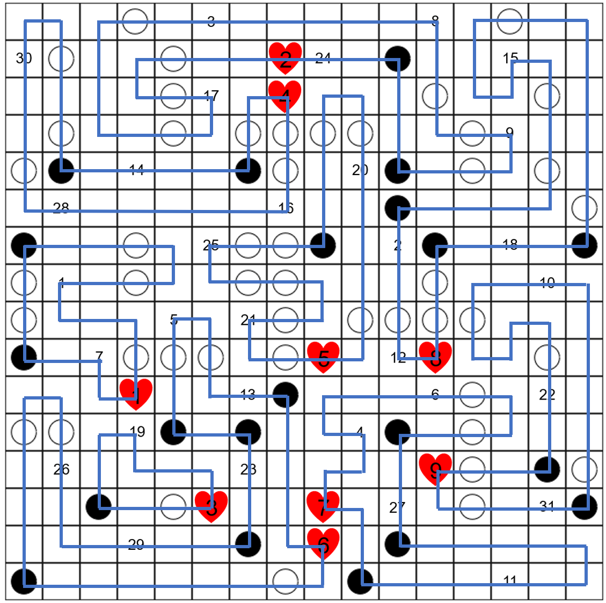

Solution: Refreshment Stand
Answer: ACAI LUNCH
Written by aki
The first step of the puzzle is to solve the Masyu variant, simply using the black circles, white circles and red hearts. Here is the solved grid.

The next step is to solve the clues. In the flavor text, “wild smells” and “link” clues us into the fact that this puzzle is about The Legend of Zelda: Breath of the Wild. Each of the statements clue a particular, unique ingredient used for cooking in the game. This can be inferred from the fact that some of these items are described as plants, mushrooms, flowers and seasonings. The statements mostly refer to the in-game descriptions of these items, but some also reference the ingredient’s uses (such as in dyes), armor upgrades or quests. The cluelist is in alphabetical order.
| No. | Clue | Item |
|---|---|---|
| 1 | It is eaten by an animal with a bushy tail. | Acorn |
| 2 | A fruit used to make red dye. | Apple |
| 3 | It has durable fibers. | Armoranth |
| 4 | Produced by avians. | Bird Egg |
| 5 | A plant used to make blue dye. | Blue Nightshade |
| 6 | It is used to make cakes and sweets. | Cane Sugar |
| 7 | It is found in trees and loved by small birds. | Chickaloo Tree Nut |
| 8 | A plant that grows in the mountains. | Cool Safflina |
| 9 | A plant that conducts electricity. | Electric Safflina |
| 10 | A mushroom used to make orange dye. | Endura Shroom |
| 11 | It is made by cows. | Fresh Milk |
| 12 | A seasoning developed in scorching climates. | Goron Spice |
| 13 | This type of mushroom is small and rare. | Hearty Truffle |
| 14 | It is juicy and found in the desert. | Hydromelon |
| 15 | A grain that grows well in wet regions. | Hylian Rice |
| 16 | Clan members love this. | Mighty Bananas |
| 17 | A thorny plant. | Mighty Thistle |
| 18 | It can be obtained from small-sized mammals. | Raw Meat |
| 19 | It can be obtained from certain medium- or large-sized mammals. | Raw Prime Meat |
| 20 | It has very sharp pincers. | Razorclaw Crab |
| 21 | A seasoning obtained from the sea. | Rock Salt |
| 22 | Can be exchanged for a diamond close to the desert. | Rushroom |
| 23 | A quiet flower admired by royalty. | Silent Princess |
| 24 | Its cap glows at night. | Silent Shroom |
| 25 | A plant farmed for its leg-strengthening properties. | Swift Carrot |
| 26 | This flower grows on rock faces. | Swift Violet |
| 27 | A grain that grows in the plains. | Tabantha Wheat |
| 28 | It grows out of cacti. | Voltfruit |
| 29 | A plant used to strengthen clothes used in snowy weather. | Warm Safflina |
| 30 | A fruit that grows well in the cold. | Wildberry |
| 31 | It grows near trees and can make rubber more protective. | Zapshroom |
Since every cell in the grid is used, we can group up the ingredients by the number of the loop they lie on (each group is unordered, given by the fact that we do not have a direction or starting point for each loop). The enumeration gives us an ordering.
| Loop | Ingredients | Dish | Hearts | Letter |
|---|---|---|---|---|
| 1 | Acorn, Chickaloo Tree Nut | SAUTEED NUTS | 2 | A |
| 2 | Armoranth, Cool Safflina, Electric Safflina, Mighty Thistle, Silent Shroom | COPIOUS FRIED WILD GREENS | 1 | C |
| 3 | Raw Prime Meat | MEAT SKEWER | 3 | A |
| 4 | Hydromelon, Mighty Bananas, Voltfruit, Wildberry | COPIOUS SIMMERED FRUIT | 4 | I |
| 5 | Razorclaw Crab, Rock Salt, Swift Carrot | SALT-GRILLED CRAB | 3 | L |
| 6 | Blue Nightshade, Hearty Truffle, Silent Princess, Swift Violet, Warm Safflina | COPIOUS FRIED WILD GREENS | 6 | U |
| 7 | Bird Egg, Cane Sugar, Fresh Milk, Tabantha Wheat | PLAIN CREPE | 5 | N |
| 8 | Apple, Goron Spice, Hylian Rice, Raw Meat | MEAT CURRY | 5 | C |
| 9 | Endura Shroom, Rushroom, Zapshroom | MUSHROOM SKEWER | 4 | H |
At this point it is important to notice that each group of ingredients makes a valid recipe in the game, since each in-game recipe has between 1 to 5 ingredients. Further, the order of added ingredients does not affect the resulting dish. This means each loop represents a type of dish. As clued by the use of hearts in the grid to enumerate each loop, we also should keep track of the number of hearts that each dish restores when cooked. (Cooking effects and additional yellow hearts are not relevant for this puzzle as none of the dishes produced have either.)
The number of hearts is determined by the particular ingredients used, so it is most helpful to find a list of cooked ingredients and their heart contributions (for example, this list). It is somewhat tedious to compute by hand, but there are also online tools available that automate this (for example, the Guide of the Wild reference site). Doing so, we notice that every dish restores an integer number of hearts, which we can use as an index into the name of the meal. With that, we find that after helping the unknown friend in need, you decided to eat an ACAI LUNCH.
Author's Notes
This was the first non-meta puzzle to be written for this hunt! I am fairly happy with how it turned out. There are many things that could be improved about this puzzle such as finding a more elegant way to integrate the ingredients with the logic puzzle or making the two sections of the puzzle less independent, but I think it ended up being okay.
I also decided to throw in a little easter egg for those who have played BotW – did you figure out who was manning the refreshment stand?